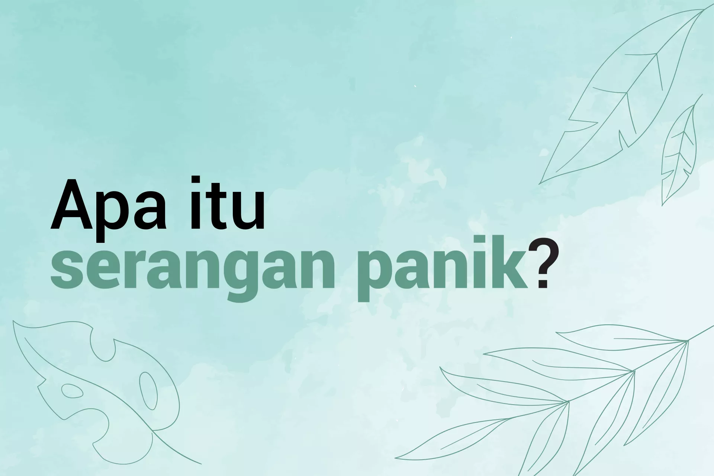

Cyberbullying: Apa itu dan bagaimana menghentikannya
“Apa yang ingin kamu ketahui dari cyberbullying?” Kami mengajukan
pertanyaan ini kepada orang muda dan menerima ribuan tanggapan dari
mereka di seluruh dunia! Kami mengumpulkan spesialis dari UNICEF,
pakar cyberbullying dan perlindungan anak, pegiat pencegahan
cyberbullying, serta bekerja sama dengan Facebook, Instagram, dan
Twitter untuk menjawab pertanyaan-pertanyaan dan memberikan saran
tentang cara untuk menghadapi cyberbullying.
Baca selengkapnya

Apa itu stres?
Kita semua saat ini hidup di tengah dunia yang rentan menimbulkan
stres. Seperti halnya orang dewasa, anak-anak pun mengalami hal yang
sama. Ada begitu banyak perubahan besar yang sedang terjadi di
dunia, tetapi ada banyak pula hal-hal sehari-hari yang bisa
menyebabkan stres pada anak. Contohnya, situasi negatif di rumah,
kekerasan di sekolah, ataupun ujian. Situasi positif pun, seperti
pindah rumah atau harus berkenalan dengan teman baru, seringkali
bisa menyebabkan stres.
Baca selengkapnya

Apa itu depresi?
Semua anak pernah mengalami perasaan sedih atau murung. Hal ini
sangat wajar dalam proses tumbuh kembang. Akan tetapi, kondisi emosi
ini bisa menjadi masalah jika dirasakan secara intens dan
berkepanjangan, terlebih jika berpengaruh terhadap kehidupan anak,
mulai dari lingkungan pergaulannya, keluarga, hingga sekolah. Siapa
pun yang sedang mengalami depresi umumnya akan kesulitan merasa
optimis. Kabar baiknya, depresi bisa diatasi, dan ada hal-hal yang
bisa dilakukan orang tua untuk membuat anak merasa lebih nyaman.
Baca selengkapnya

Apa itu serangan panik?
Serangan panik adalah perasaan takut dan cemas yang sangat hebat.
Serangan panik sering kali terjadi ketika seseorang merasa cemas
akan sesuatu hal dalam hidupnya atau pernah mengalami sesuatu yang
amat sulit dan penuh stres. Serangan panik dapat terasa amat
menakutkan, khususnya bagi anak-anak, tetapi biasanya dapat
dihentikan dengan penanganan. Penting untuk diketahui bahwa serangan
panik tidak akan menimbulkan cedera dan akan berlalu—meski saat
sedang terjadi serangan ini bisa terasa seolah tidak akan berakhir.
Baca selengkapnya

Apa itu kecemasan?
Perasaan khawatir dan cemas wajar dirasakan sesekali oleh anak-anak,
misalnya saja karena masalah pertemanan, keharusan berbicara di
depan umum, atau menghadapi ujian. Namun, ketika rasa khawatir tidak
kunjung reda sampai-sampai mengganggu kehidupan sehari-hari,
kecemasan dapat berkembang menjadi suatu masalah. Kabar baiknya,
kecemasan ini bisa diatasi dengan bantuan yang tepat dari tenaga
profesional dan upaya membangun kemampuan menghadapi masalah secara
positif.
Baca selengkapnya